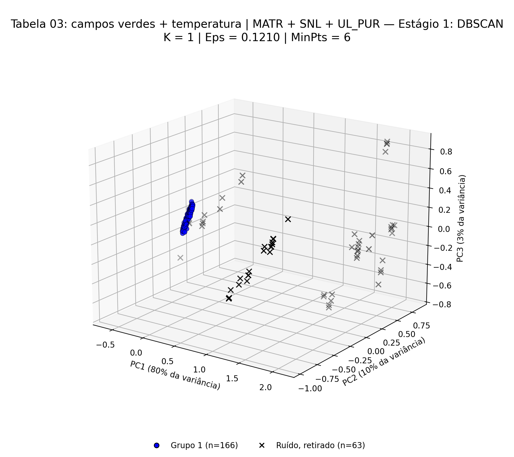

Tabela 03: campos verdes + temperatura (MATR + SNL + UL_PUR)
Datasets: MATR, SNL, UL_PUR
ciclos 96–100 · MinPts = 6 · K = do DBSCAN
Resumo
| datasets | MATR + SNL + UL_PUR |
|---|---|
| campos | 19 |
| campos que variam | 13 |
| sem variação | anodo, formato, prof_carga, prof_descarga, ciclos_gastos, n_ciclo |
| células | 229 |
| ruído | 63 |
| células no estágio 2 | – |
| K DBSCAN | 1 |
| K usado | 1 |
| Eps | 0.121 |
| maior silhueta | – |
| situação | K = 1: um grupo só (tente um Eps menor em EPS_MANUAL ou use K_FIXO) |
Campos usados
| nome | campo | medido | varia entre as células |
|---|---|---|---|
| nominal | Capacidade nominal (Ah) | por célula | sim |
| catodo | Material do cátodo | por célula | sim |
| anodo | Material do ânodo | por célula | não |
| formato | Formato | por célula | não |
| prot_carga | Protocolo de carga (C médio) | por célula | sim |
| prot_descarga | Protocolo de descarga (C médio) | por célula | sim |
| faixa_soc | Faixa de SOC (fim − início) | por célula | sim |
| prof_carga | Profundidade de carga | por célula | não |
| prof_descarga | Profundidade de descarga | por célula | não |
| v_max | Tensão máxima (V) | por célula | sim |
| v_min | Tensão mínima (V) | por célula | sim |
| ciclos_gastos | Ciclos já gastos | por célula | não |
| n_ciclo | Nº do ciclo | por ciclo | não |
| tensao | Tensão média de descarga (V) | por ciclo | sim |
| corrente | Corrente de descarga (C) | por ciclo | sim |
| cap | Capacidade de descarga / nominal | por ciclo | sim |
| cap_carga | Capacidade de carga / nominal | por ciclo | sim |
| tempo | Tempo de carga + descarga (h) | por ciclo | sim |
| temp | Temp. média na descarga (°C) | por ciclo | sim |
DBSCAN e métricas
Gráficos 3D: 3 primeiras componentes do PCA. O clustering usa todos os campos.
